Physique
Il renforce les systèmes immunitaire, nerveux et glandulaire en les faisant travailler de concert.
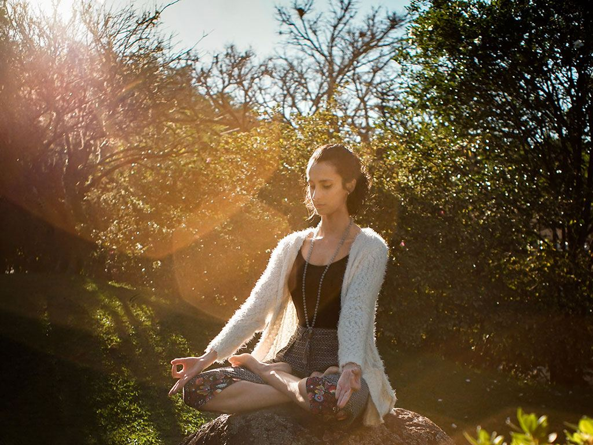
Le Kundalini YogaPostures, respiration, relaxation, méditation et chant de mantras : un yoga à la fois corporel, respiratoire et méditatif, qui travaille sur tous les plans de l’être.
Le Kundalini Yoga allie les postures, la respiration, la relaxation et la méditation. C’est une technique puissante pour activer notre énergie vitale, clarifier notre esprit et redynamiser notre organisme.
On pratique des séries d’exercices appelées « kriyas » (action, en sanskrit) pour accéder à différentes zones du corps et de la psyché. Le son y tient une place privilégiée, avec le chant de mantras.
Toutes et tous : assis sur une chaise, allongé, debout… la palette de techniques est très variée, accessible quels que soient l’âge, l’état de santé ou un handicap. Le Kundalini Yoga accueille chacun·e quelles que soient ses convictions, et invite à une vision large et tolérante de l’être humain.


Véritable technologie au service de l’humain, le Kundalini Yoga permet à chacun·e de retrouver les ressources nécessaires à sa croissance, au développement de son potentiel, et à une guérison profonde, née de l’intérieur.
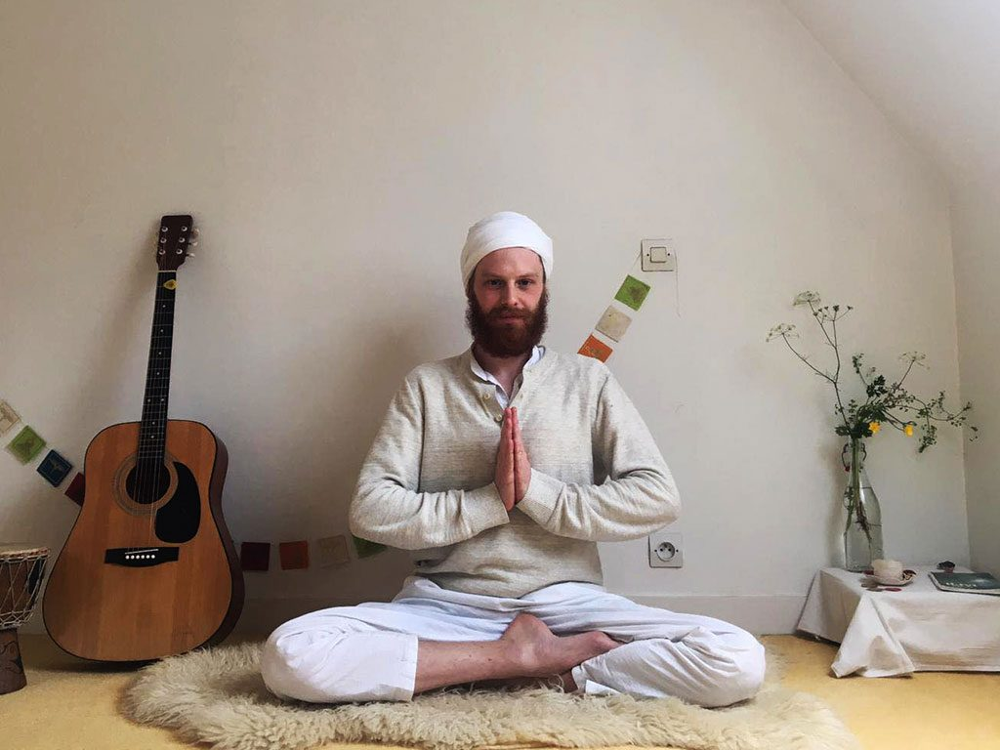

Le Kundalini Yoga agit directement sur la circulation de notre énergie vitale, appelée « Kundalini » par les yogis.
Il renforce les systèmes immunitaire, nerveux et glandulaire en les faisant travailler de concert.
Clarté d’esprit, meilleure résistance au stress, discernement et confiance en soi accrue.
Il aide à dépasser des blocages affectifs, à intégrer des mémoires de relations passées et à retrouver une nouvelle intimité avec soi-même.
Il permet de passer d’une conscience individuelle à une conscience universelle, à travers l’expérience de la conscience de groupe.
Le stress devient un allié quand nous savons l’utiliser. Le Kundalini Yoga nous apprend à le transformer en source de vitalité.
Le Kundalini Yoga nous aide à repousser nos limites, peu à peu, et à dépasser nos systèmes de croyances.
Accueillir ses émotions et les laisser s’exprimer : une façon de se transformer et de se purifier en profondeur.
Écouter nos ressentis et nous faire confiance pour guider nos choix.
Nous sommes nos meilleurs thérapeutes : une meilleure connaissance du corps et de l’esprit ouvre nos capacités d’auto-guérison.
Le Kundalini Yoga révèle notre part illimitée : à nous de nous saisir de nos vies pour créer ce que nous voulons être.
En bref : postures, mantras, son et rythme du souffle libèrent le corps et l’esprit, pour que l’énergie vitale circule librement et que chacun·e développe son plein potentiel.
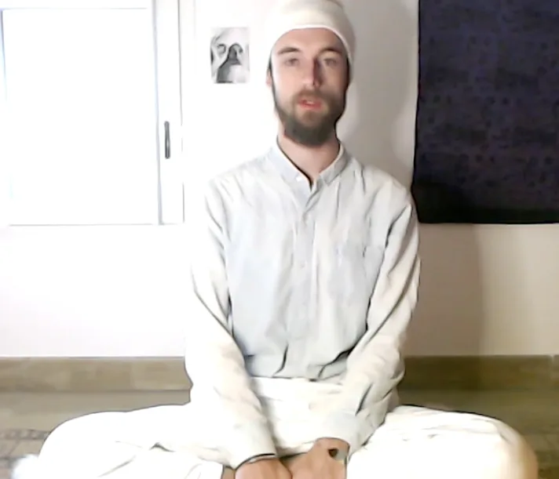

Chanté 3 fois par le groupe, mains en posture de prière : Ong Namo Guru Dev Namo. Il est parfois suivi du mantra de protection : Aad Guray Nameh, Jugaad Guray Nameh, Sat Guray Nameh, Siri Guru Devay Nameh.
Quelques exercices peuvent être proposés, par exemple la Salutation au Soleil.
Le cœur de la séance : une série d’exercices très précis avec un but donné, par exemple renforcer le système nerveux ou clarifier le mental.
Une phase de relaxation profonde, sur le dos, pour intégrer les effets des postures.
Avec le souffle (pranayama), le son (mantra), une posture des doigts (mudra)…
En posture de prière, avec le mantra Sat Nam chanté 3 fois.
Des cours partout en France et en ligne, sur la carte des cours.
Ouvrir la carte : Trouver un cours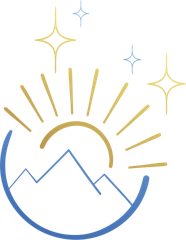
La pratique de l’aube, et des séances matinales en ligne.
Découvrir la sadhana : SadhanaStages, ateliers, formations et festival.
Voir l’agenda : Calendrier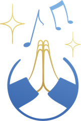
Chaque dimanche, un cours en ligne en sangat.
Participer : Le cours de la FFKY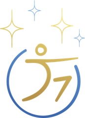
Le Printemps du Yoga, du 5 au 9 mai 2027.
Découvrir le festival : Le festivalHuit pratiques prolongent le Kundalini Yoga : marche consciente, relaxation profonde au service de l’autre, numérologie yogique, Tantra Blanc, gong, mantra, Shakti danse, et des outils yogiques au service des mères et des femmes.
Découvrir les pratiques associées
Des fiches pratiques traduites en français pour nourrir votre pratique au quotidien.
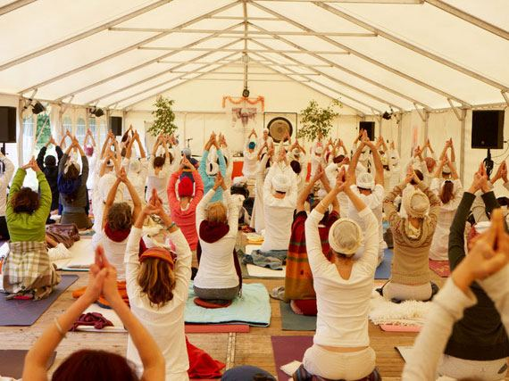
Signifie « action » en sanskrit : un ensemble d’exercices conçu avec un but précis.
Ultime étape de la pratique yogique, elle invite à se déposer dans le silence et la contemplation.
Les mantras élèvent la conscience et nous relient à nous-même grâce à la vibration du son.
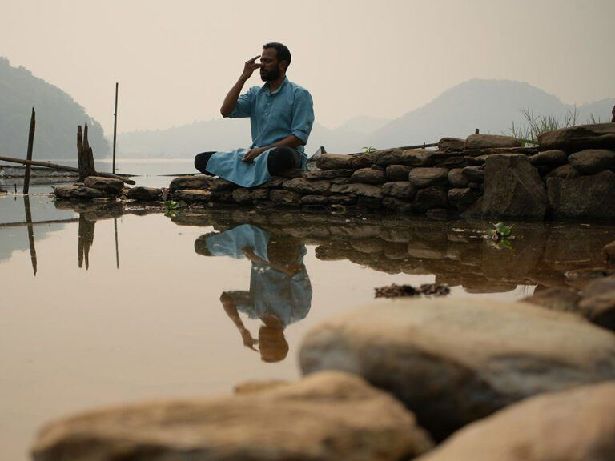
La maîtrise du souffle permet de prendre conscience de soi, de purifier et de détendre le corps.
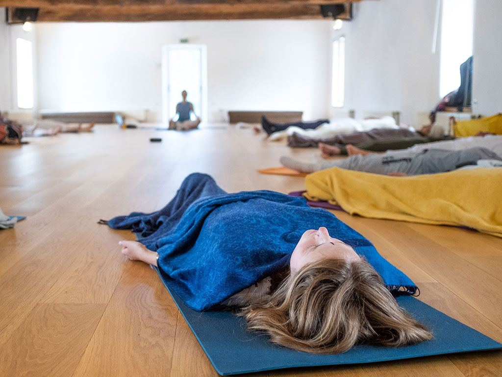
Après les exercices, elle permet à tous nos corps d’intégrer les effets du kriya.
accès aux fiches (libre ou réservé aux adhérent·es) : à confirmer avec le chantier espace adhérent
Le mot Sangat signifie « congrégation, communauté spirituelle » : la conscience collective des yogis, qui se manifeste chaque fois que des yogis se réunissent pour pratiquer, méditer, travailler ou célébrer la vie ensemble. Elle repose notamment sur le Seva, le service : le bénévolat au service de tous et la libre contribution, dans l’action et depuis le cœur, à la vie de la communauté.
« Fais de l’humanité tout entière ta communauté spirituelle. »
Vous avez une idée ? Reportage photo, stand d’information dans votre ville, articles, témoignages, traductions, candidature au bureau : consultez-nous et harmonisons nos efforts.
Bien distinguer seva, bénévolat et travail rémunéré, en lien avec le code d’éthique, garantit des relations saines : « Seva et la relation saine entre l’élève et l’enseignant » (article de KRI en français).
Proposer mon aide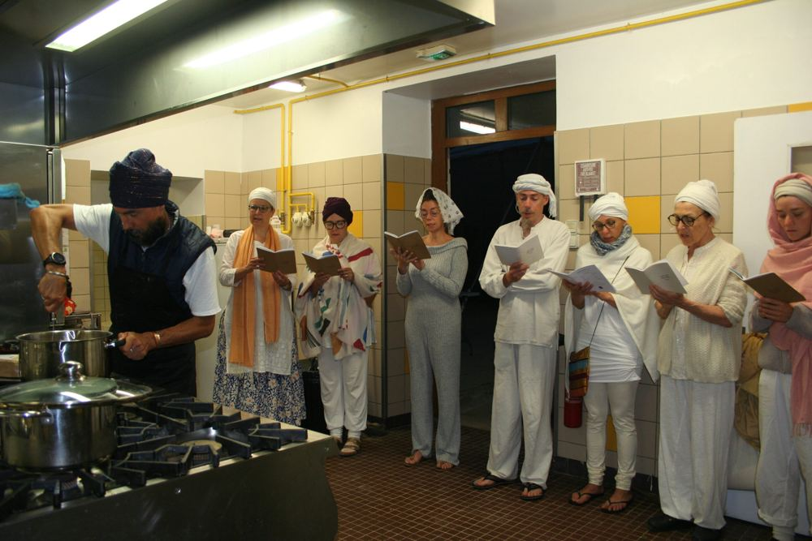
Le Kundalini Yoga trouve ses racines au croisement de différentes lignées spirituelles et yogiques : les Védas et les Upanishads, les tantras, le Shaktisme, les Yoga Sutras de Patanjali. Il a été transmis au monde moderne par Yogi Bhajan à partir des années 1960, et partage avec le Dharma Sikh un ensemble de pratiques méditatives et de modes de vie.
Lire les origines